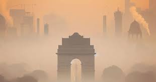

Delhi is currently grappling with a severe air pollution crisis, and the Air Quality Index (AQI) has reached alarming levels. Residents are facing health risks due to the deteriorating air quality.
The dense smog and hazardous pollutants in the air can lead to respiratory issues and other health concerns. It's crucial for the community to be aware of the situation and take necessary precautions.
The primary contributors to the poor air quality in Delhi include rampant vehicle emissions, industrial pollution, and the practice of crop burning in neighboring regions. These factors combine to create a toxic mix of pollutants in the air.
Addressing these root causes requires a multi-faceted approach, including stricter emission standards, sustainable urban planning, and effective measures to tackle agricultural burning.
Residents are advised to take precautions to minimize their exposure to harmful air pollutants. This includes using masks when outdoors, especially in heavily polluted areas, and limiting outdoor activities during times of peak pollution.
Staying informed about the latest air quality updates and following government guidelines on safety measures is crucial for safeguarding personal health and well-being.
Here is a video to understand the current situations in deep:
Community involvement is crucial in the fight against air pollution. Local initiatives focusing on tree planting, waste reduction, and sustainable practices play a vital role in creating a cleaner and healthier environment.
Residents are encouraged to participate in such initiatives, as collective efforts can significantly contribute to improving air quality and creating a more sustainable future for Delhi.